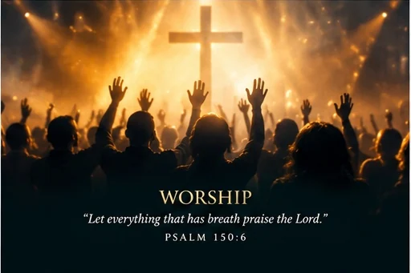

Hebrews 10:24–25 · KJV
Gather together and encourage one another toward love and good works.
Gather with us
Stay connected with worship, fellowship, and future church gatherings.
Gather with us
Join us for worship, fellowship, and opportunities to grow together.
Check back for confirmed dates and details. You can also follow the church's official Facebook page for announcements.
Church announcements on Facebook ↗Visit us
Find our location, explore the sanctuary, and check the service schedule before visiting.
Our foundation built on Christ

Hebrews 10:24–25 · KJV
Gather together and encourage one another toward love and good works.
Matthew 18:20 · KJV
Jesus speaks of His presence where believers gather in His name.
Psalm 122:1 · KJV
“I was glad when they said unto me, Let us go into the house of the LORD.”
Gathering for worship is a joy.